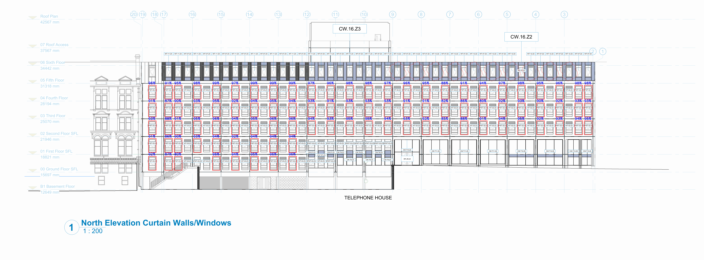

ArcScanner Pro - PDF Pattern Detection
Demo- Engineered a web-based backend pipeline using PyMuPDF and OpenCV for PDF-to-image conversion, adaptive preprocessing, and multi-template matching with threshold tuning — achieving 94.35% average pattern localization accuracy.
- Delivered real-time, high-resolution visualizations with bounding boxes and confidence scores, enabling instant architectural pattern analysis and download.
FastAPI
•
OpenCV
•
PyMuPDF
•
JavaScript